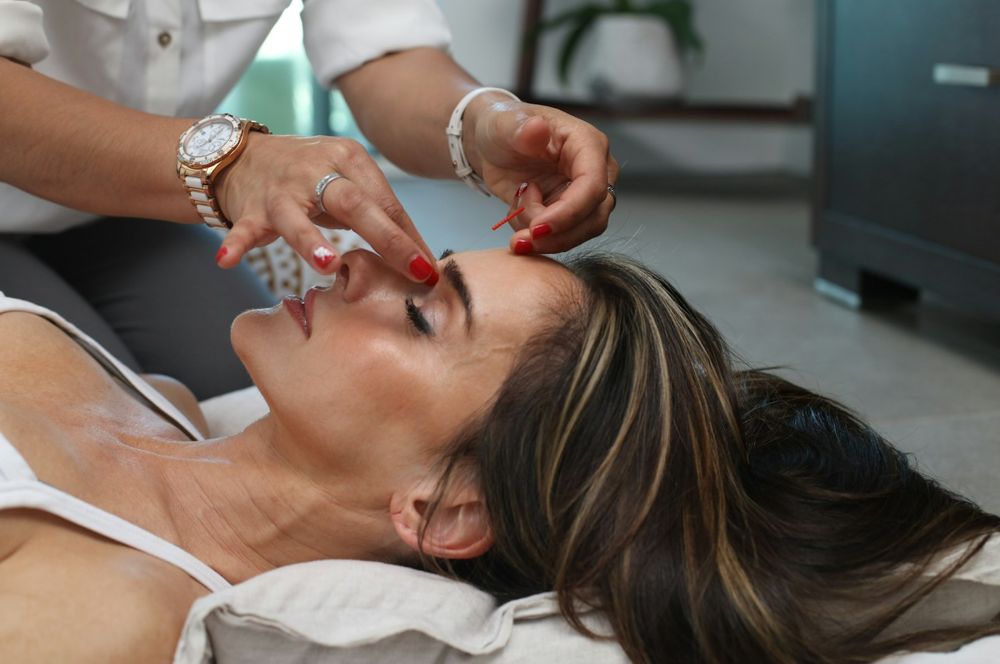
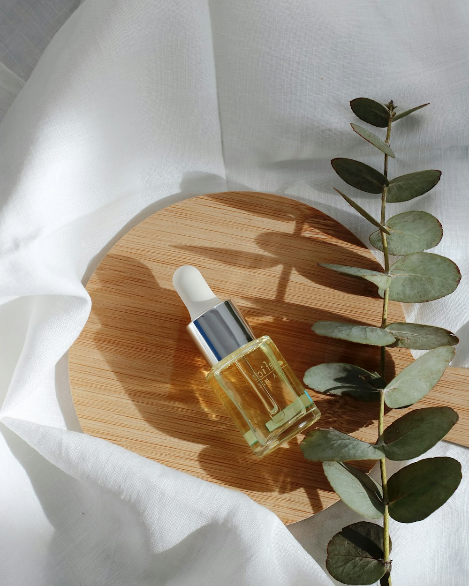
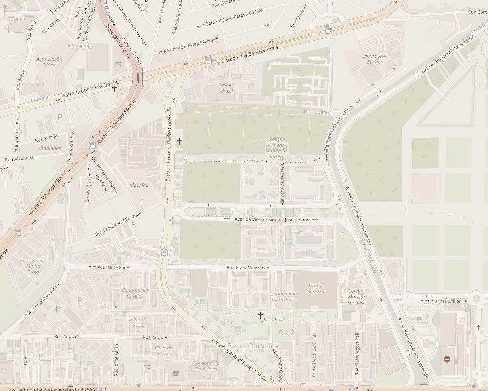

Resultado natural
O ponto mais lembrado: harmonização e rinomodelação com resultado que não parece “feito”.
Harmonização · RinomodelaçãoHarmonização facial, rinomodelação e toxina botulínica na Barra da Tijuca, com resultado natural e atenção antes, durante e depois do procedimento.
5,0 no Google · 25 avaliaçõesO melhor resultado é quando dizem “você está ótima”, e não “o que você fez?”.
A Dra. Julia Batalha atende na Barra da Tijuca com um cuidado que as próprias pacientes fazem questão de contar nas avaliações: resultado natural, segurança e atenção em cada etapa.
Cada tratamento começa por uma avaliação individual. A indicação é sempre feita a partir do seu rosto, da sua história e do que você quer sentir ao se olhar no espelho.
Planejamento do rosto como um todo para equilibrar proporções e valorizar o que já é bonito em você, com leveza e sem exageros.
Perguntar sobre harmonizaçãoAjustes no contorno do nariz sem cirurgia, para um perfil mais harmônico e alinhado ao restante do rosto.
Perguntar sobre rinomodelaçãoO Botox para suavizar linhas de expressão, mantendo a naturalidade do olhar e do sorriso.
Perguntar sobre toxina botulínicaNão sabe por onde começar? Conte o que te incomoda. Na avaliação, a Dra. Julia indica o caminho certo para o seu momento.
Conversar no WhatsApp
É o que mais aparece nas avaliações: a sensação de estar sendo cuidada do primeiro contato até o resultado final.
Uma conversa sem pressa. Avaliação do rosto, das suas expectativas e um plano feito para você, com hora marcada.
Atendimento atencioso e explicado passo a passo, num ambiente pensado para você se sentir tranquila.
Orientações claras e suporte no pós-procedimento. Ficou alguma dúvida? É só chamar.
Harmonização não é sobre mudar de rosto. É sobre se reconhecer no espelho e gostar ainda mais do que vê: descansada, equilibrada, natural.
O que as pacientes mais destacam nas avaliações públicas do perfil no Google.
O ponto mais lembrado: harmonização e rinomodelação com resultado que não parece “feito”.
Harmonização · RinomodelaçãoPacientes contam que se sentiram seguras para fazer o procedimento, inclusive pela primeira vez.
Toxina botulínicaA atenção depois do procedimento aparece com frequência: orientação e acompanhamento de perto.
AcompanhamentoAtenção antes, durante e depois, com explicações claras e sem pressa.
AtendimentoTécnica, pontualidade e seriedade são destacadas junto com o carinho no atendimento.
AtendimentoUm espaço confortável e tranquilo, que deixa a experiência mais leve.
EspaçoChegar de carro na Barra é simples.
Seu horário é reservado para você, sem espera.
Formas de pagamento práticas no consultório.
Ambiente acolhedor para a comunidade LGBTQIA+ e seguro para pessoas trans.

Pelo WhatsApp (21) 97309-8600. O atendimento é sempre com hora marcada.
Segunda a sexta, das 8h às 21h, e sábado, das 8h às 17h. Aos domingos não há atendimento.
Pode, e é o ideal. Na avaliação você tira suas dúvidas e entende o que faz sentido para o seu rosto antes de decidir qualquer coisa.
Sim, há estacionamento no local.
Cartão de crédito, cartão de débito e pagamento por aproximação.
Av. Vice-Presidente José Alencar, 1405
Barra da Tijuca (Cidade Jardim), Rio de Janeiro – RJ
CEP 22775-033 · Estacionamento no local
Sempre com hora marcada.

Abrir no Google Maps © OpenStreetMap